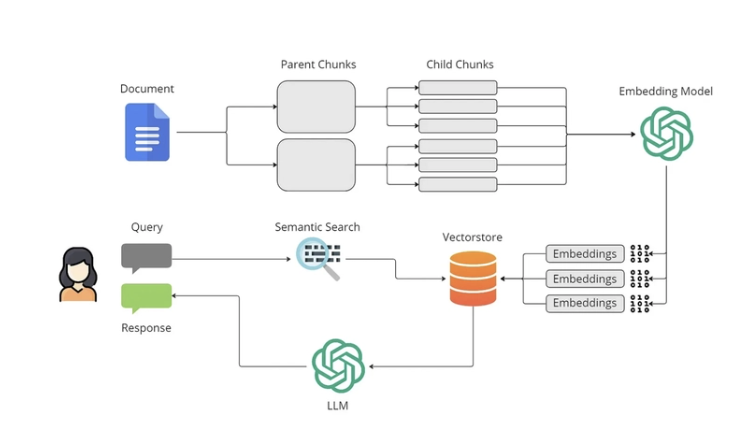
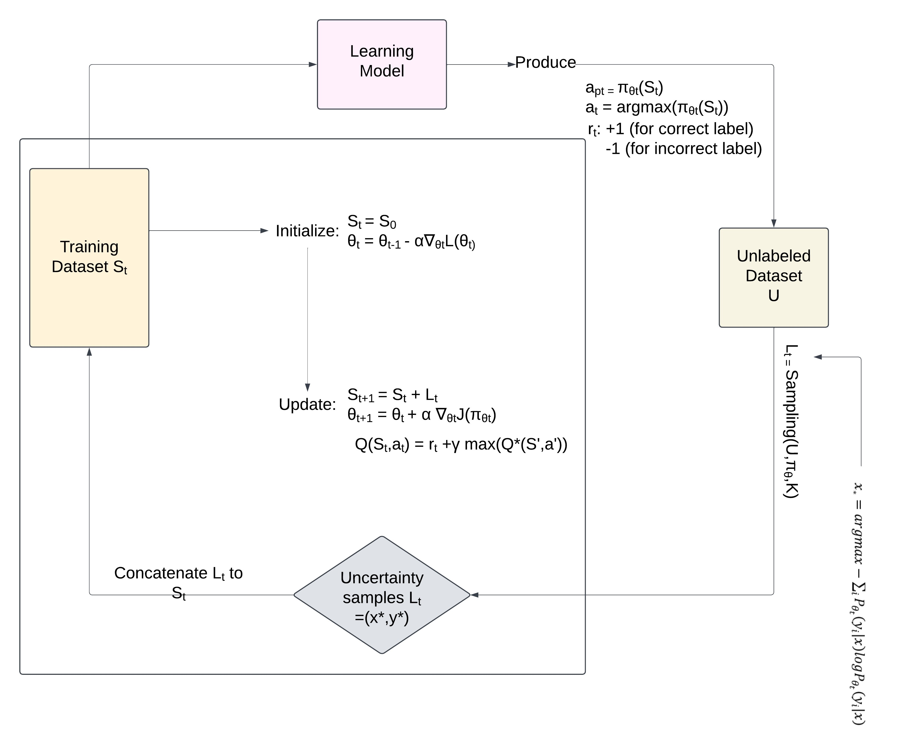

Automated Bio-Printable Wound Patch Generation

Multi-view RGB images → Segmentation → 3D reconstruction → Bioprintable patch
Stack: Python · PyTorch · COLMAP · Open3D · Trimesh · OpenCV · EfficientNet-B4
Links: GitHub ·
Personalized wound scaffolds require accurate 3D wound geometry, yet current workflows often rely on manual CAD design, flat-base patches, or specialized scanning hardware. These approaches increase fabrication time, reduce scaffold conformity, and waste expensive bio-inks.
Developed an end-to-end pipeline that converts multi-view RGB wound images into fabrication-ready 3D patch geometries.
- ROI localization using 3D oriented bounding box projections to obtain wound-centric image crops while preserving camera geometry
- Wound segmentation using EfficientNet-B4 U-Net trained on Syn3DWound
- 3D reconstruction using COLMAP SfM and dense stereo, combined with segmentation-guided mesh filtering to isolate wound surfaces
- Conformal patch generation producing watertight STL models for extrusion-based bioprinting
- Achieved Dice = 0.921 ± 0.047 on 14 wound cases from the Syn3DWound benchmark
- Reconstructed wound meshes with 2.639 mm mean Chamfer Distance from ground truth geometry
- Generated watertight printable patches for 21/21 reconstructed cases
- Reduced estimated bio-ink usage by 23.3% compared with conventional flat-base patches
- Accepted for publication at the 11th International Conference on Biomedical Engineering in Vietnam (BME11)
Primary contributor responsible for wound segmentation model development, 3D reconstruction pipeline implementation, STL patch generation, experimental evaluation, visualization development, and contribution to conference paper preparation under faculty supervision.
Medical Research Assistant (RAG)

PDF ingestion → embeddings → FAISS retrieval → Cross-Encoder reranking → citation-aware answer generation
Stack: Python · LangChain · FAISS · Hugging Face Transformers · Sentence Transformers · Cross-Encoder Reranker · Gemini API · Streamlit
Links: GitHub
Medical researchers and clinicians frequently work with large collections of scientific papers, clinical reports, and healthcare guidelines. Traditional keyword search often fails to capture semantic meaning, making evidence retrieval slow and inefficient.
The objective was to build an AI-powered assistant capable of retrieving relevant biomedical evidence and generating grounded answers directly from medical literature.
Implemented an end-to-end Retrieval-Augmented Generation (RAG) system:
- Multi-document PDF ingestion — automatically processes collections of biomedical research papers.
- Document chunking & semantic embeddings — converts document sections into dense vector representations.
- FAISS vector retrieval — retrieves candidate passages relevant to user questions.
- Cross-Encoder reranking — reorders retrieved passages using transformer-based relevance scoring to improve retrieval precision.
- Grounded answer generation — uses Gemini to generate answers strictly from retrieved evidence.
- Citation-aware responses — displays source papers and page references for answer verification.
- Built a complete biomedical literature question-answering platform supporting multi-paper retrieval and evidence-based responses.
- Improved retrieval quality through a two-stage retrieval pipeline (FAISS retrieval + Cross-Encoder reranking).
- Enabled users to trace answers back to source documents, increasing transparency and reducing hallucination risk.
- Demonstrated practical application of modern RAG architectures for healthcare and scientific knowledge retrieval.
Designed and implemented the complete system architecture, including PDF ingestion, document preprocessing, vector database construction, semantic retrieval, reranking, prompt engineering, citation generation, and Streamlit deployment.
Stress Recognition from Wearable Signals

Double DQN and Active Learning Framework
Stack: Python · TensorFlow · Keras · CNN-LSTM · DDQN · Active Learning · NumPy · SciPy
Links: GitHub · Scopus · Springer
Stress is a major driver of burnout, cardiovascular disease, and mental health deterioration — yet most detection methods are either confined to clinical settings or too unreliable for real-world use. Existing wearable-based approaches struggled with cross-subject generalization: models trained on one person performed poorly on another due to high physiological variability. Acquiring large labeled datasets in healthcare is also expensive and slow, compounding the challenge.
Designed a three-stage hybrid pipeline to tackle both generalization and data scarcity:
- CNN-LSTM backbone — CNN layers extract spatial features from multi-channel physiological signals (EDA, BVP, temperature); LSTM layers model temporal dynamics across sliding time windows
- Double DQN (DDQN) — reinforcement learning agent adaptively selects the most informative training samples, reducing overfit to subject-specific noise patterns
- Active Learning loop — model iteratively queries uncertain samples for labeling, cutting labeled data requirements without sacrificing performance
- LOSO validation — Leave-One-Subject-Out protocol, the strictest cross-subject evaluation standard, ensuring results generalize to unseen individuals
- Achieved 95.1% classification accuracy under LOSO — meaningful improvement over baseline CNN-only and LSTM-only approaches
- DDQN-guided sample selection improved cross-subject robustness by reducing sensitivity to individual physiological baselines
- Active learning reduced labeled data requirements by ~30%, making the pipeline more feasible for real clinical data collection
- Published in Scopus-indexed proceedings and Springer book chapter
- Live model deployed on Hugging Face Spaces for public demonstration
Primary contributor responsible for physiological signal preprocessing, CNN-LSTM architecture implementation, DDQN-based active learning framework development, LOSO evaluation experiments, deployment of the live demo application, and contribution to scientific manuscript preparation under faculty supervision.